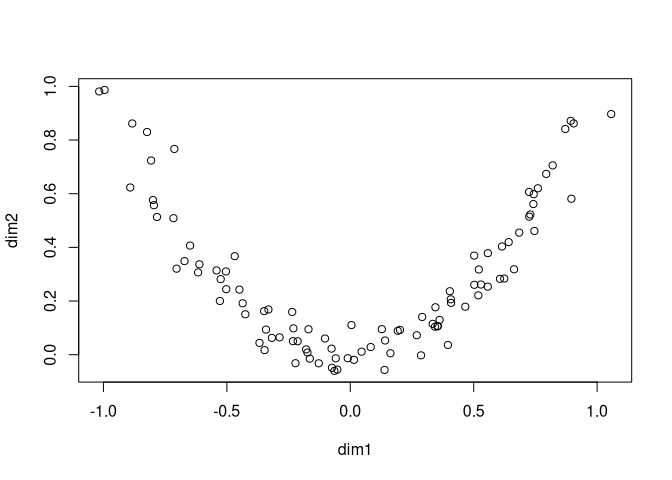
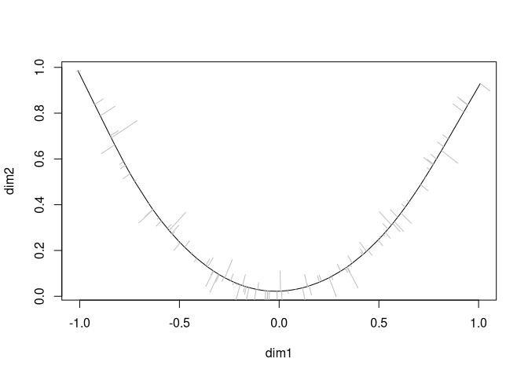

Fitting a principal curve to a data matrix in arbitrary dimensions. A principal curve is a smooth curve passing through the middle of a multidimensional dataset. This package is an R/C++ reimplementation of the S/Fortran code provided by Trevor Hastie, with multiple performance tweaks.
Example
Usage of princurve is demonstrated with a toy dataset.
t <- runif(100, -1, 1)
x <- cbind(t, t ^ 2) + rnorm(200, sd = 0.05)
colnames(x) <- c("dim1", "dim2")
plot(x)
A principal curve can be fit to the data as follows:
library(princurve)
fit <- principal_curve(x)
plot(fit); whiskers(x, fit$s, col = "gray")
See ?principal_curve for more information on how to use the princurve package.
Latest changes
Check out news(package = "princurve") or NEWS.md for a full list of changes.
Recent changes in princurve 2.1.6 (2021-01-17)
BUG FIX
project_to_curve(): Return error message whenxorscontain insufficient rows.BUG FIX unit tests: Switch from
svg()topdf()as support forsvg()might be optional.
Recent changes in princurve 2.1.5 (2020-08-13)
- BUG FIX
project_to_curve(): Fix pass-by-reference bug, issue #33. Thanks to @szcf-weiya for detecting and fixing this bug!
References
Hastie, T. and Stuetzle, W., Principal Curves, JASA, Vol. 84, No. 406 (Jun., 1989), pp. 502-516, DOI: 10.2307/2289936 (PDF)